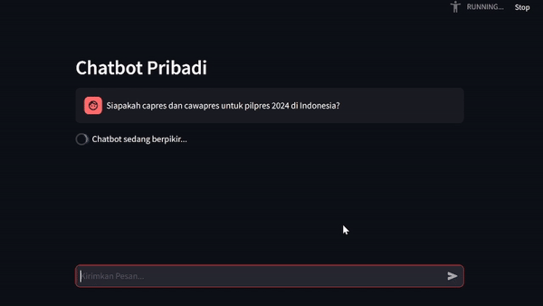

Local Llama 2 Chatbot with LangChain, Pinecone, and Streamlit

by Muhammad Reyhan Arighy Data Scientist

Introduction
This project aims to showcase the integration of technologies to build an intelligent and interactive chatbot that runs locally. The main focus is to take advantage of the Llama 2 as open source Large Language Model developed by Meta AI as introduced in their website.
While building with Llama 2, this project is intended to leverage its factual accuracy and consistency by providing it with reliable and up-to-date information from the knowledge base. Achieving this involves the model with an external database that could be used to store such novel information.
In order to keep it as simple as it goes, this project focuses solely on meeting the outlined objectives without delving into alternative technologies that would certainly complement the project but are outside its specific scope.
Chatbot Scheme Overview

Let's break down the scheme overview into key steps:
Step 1: Loading External Documents
To build a robust knowledge base for Llama 2 model, we begin by loading external documents by using DirectoryLoader library, importing a collection of documents that will serve as additional Llama 2 model's knowledge base.
Step 2: Text Chunk Splitting
After loading the external documents, the next crucial step involves breaking down the content into manageable pieces. This is accomplished using RecursiveCharacterTextSplitter library, which facilitates the division of documents into smaller text chunks. This process ensures that Llama 2 model can efficiently process and analyze the information.
Step 3: Sentence Transformation
SentenceTransformerEmbeddings library is a powerful tool that transforms individual sentences within the text chunks into representational vectors. By converting the textual data into numerical embeddings, we are able to capture semantic relationships and nuances, facilitating more effective comprehension.
Step 4: Storing in Pinecone Index Database
The transformed sentence vectors are then stored in a Pineconce index database. This step is crucial for organizing and managing the data efficiently. The Pineconce index database serves as a repository for the vector representations, enabling quick and structured access during Llama 2 model's inference and interactions.
Step 5: User Query Processing
When a user submits a query, Llama 2 model initiates the inference process. The user's query is passed into the Pineconce index, leveraging its efficient retrieval capabilities. This step aims to identify relevant text chunks based on the similarity between the query and the stored vectors in the index.
Step 6: Retrieval of Relevant Chunks
Using the similarity scores obtained from the Pineconce index, Llama 2 model retrieves the most relevant text chunks associated with the user's query. This retrieval step is crucial for obtaining contextual information that can aid in generating a meaningful response.
Step 7: Embedding Retrived Text Chunks into Llama 2 Model's Prompt
By embedding the retrieved text chunks, Llama 2 model incorporates contextual information into its understanding, allowing it to consider the specifics of the user's query.
Step 8: Contextually Relevant Responses Generation
With the user's query and the embedded text chunks as contextual information, Llama 2 model generates a response that is contextually relevant. The embedded text chunks contribute to the model's understanding of the specific context, enabling it to provide more accurate and meaningful answers based on the information contained in the knowledge base.
Features


Llama 2 Model Usage
The chatbot application in this repository is designed to behave as an intelligent and interactive assistant, providing insightful replies to a wide range of queries. Leveraging the capabilities of the Llama 2 open-access models, the chatbot aims to offer valuable assistance in various domains. By this, we should be able to know how to prompt the models as well as how to change the system prompt. You can get to know about it on this release of Hugging Face Blog.
The prompt template for the first turn looks like this:

This template follows the model's training procedure as described in Llama 2 Paper. We can use any system prompt we want, but it's crucial that the format matches the one used during training.
To spell it out in full clarity, when trying to embed the contextually relevant information into system prompt, this is what is actually sent to Llama 2 model when user enters a query to initiate a chat.

As you can see, the instructions between the special <<SYS>> and <</SYS>> tokens provide context for the model so it knows how we expect it to respond. This works because exactly the same format was used during training with a wide variety of system prompts intended for different tasks.
As the conversation progresses, all the interactions between user and assistant are appended to the previous prompt. The template used during multi-turns conversation follow this structure.

For some final clarifications, you can go directly to this link.
The model is stateless and does not "remember" previous fragments of the conversation, we must always supply it with all the context so the conversation can continue. This is the reason why context length is a very important parameter to maximize as it allows for longer conversation and larger amounts of information to be used.
Longer conversation affects heavier computations when executing in standard hardware, particularly those not equipped with GPUs for machine learning or with limited RAM. This can be overcomed by limitting the context window if contextually relevant context is provided by external information.
Chatbot Interaction
Upon attempting to test the Llama 2 model's ability to provide factual and relevant responses to contextual query given by user, we can establish the real environment using streamlit library as chatbot UI. This library would ease our efforts in building chatbot application in just a matter of pip install streamlit and you're done. Now check out their documentations to get along with it.
Exceptional Inspirations
This project could't be made with the help of these blogs.
intentionally left blank
Please find codes detailed on Github channel.